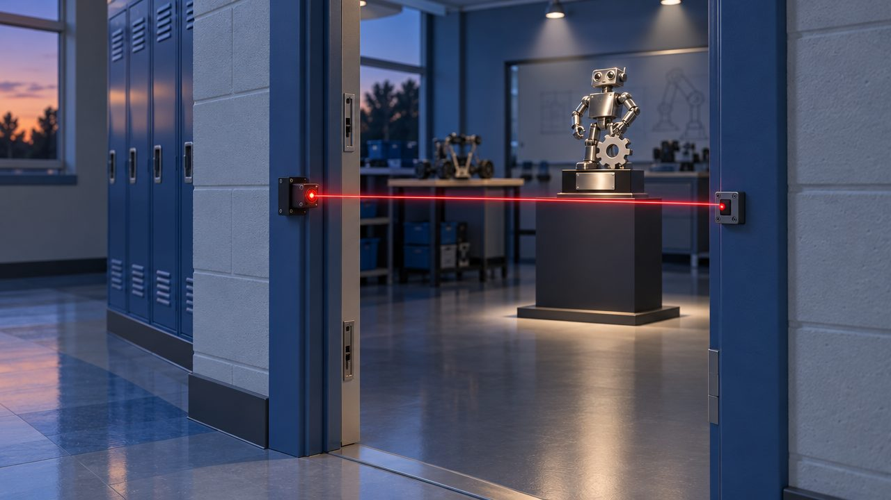
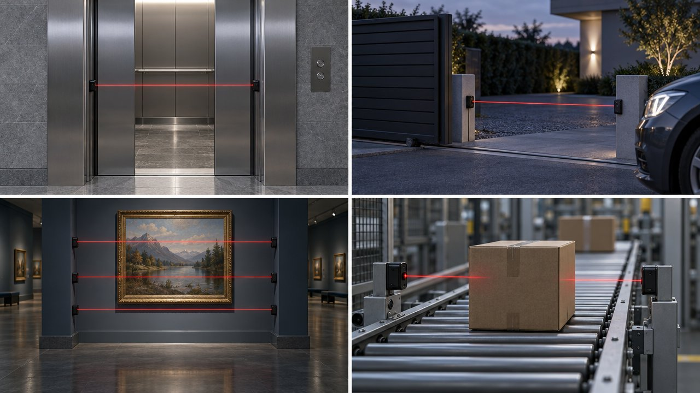
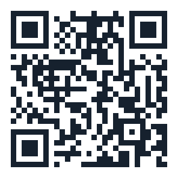

Laser spy · Part 01 · Project
A light barrier. A smart idea.
Una barrera de luz. Una idea inteligente.
Construimos un láser espía: un circuito con Arduino que detecta la interrupción de un haz de luz y activa una alarma. Mira el antes y el después en la escena, y pruébalo tú.
Project summary · parte 01 · resumen en inglés
The problem: we want to know when someone enters a protected area, but without a warning nobody notices. Our solution is a light barrier: a laser points at a light sensor, and if someone breaks the beam, the Arduino sounds the alarm. The project is for students and teachers who want to learn robotics.
Lumi te cuenta nuestra misión con su voz en menos de un minuto. En Paso a paso avanzas tú, a tu ritmo: con el botón Siguiente, las flechas del teclado o un control de presentaciones.

01 · Nuestra misión
Our mission in 3 ideas
La misión en 3 ideas
Un láser apunta a un sensor de luz. Si alguien corta el haz, suena una alarma y se enciende una luz.
-
El problema
Avisar si alguien entra
Queremos saber cuándo alguien cruza una zona protegida.
-
La solución
Una barrera de luz
Un láser apunta a un sensor. Si alguien corta el haz, el Arduino da la alarma.
-
A quién va dirigido
Aprender robótica
Para estudiantes y docentes que quieren aprender sensores, programación y seguridad electrónica.
- Emitir
- Detectar
- Avisar
Antes y después
Who is watching the door?
¿Quién vigila la entrada?
Elige Sin barrera o Con barrera de luz y pulsa Que pase alguien. Mira qué pasa con el trofeo.
En la vida real

Where light barriers are used
Dónde se usa una barrera de luz
- Ascensores: un haz invisible en la puerta evita que se cierre sobre alguien.
- Portones eléctricos: se detienen si un carro está en medio.
- Museos y bancos: haces, casi siempre infrarrojos e invisibles, que vigilan las obras de noche.
- Fábricas: cuentan productos cada vez que uno corta el haz en la banda.
Compártelo

Scan and protect the door
Escanea y protege la entrada
Ábrelo en tu celular y prueba los tres retos.
Seguridad: nunca mires el láser directo ni lo apuntes a ojos, espejos o pantallas. Apúntalo siempre al sensor o a la mesa. (Láser clase 3R, hasta 5 mW aprox.)